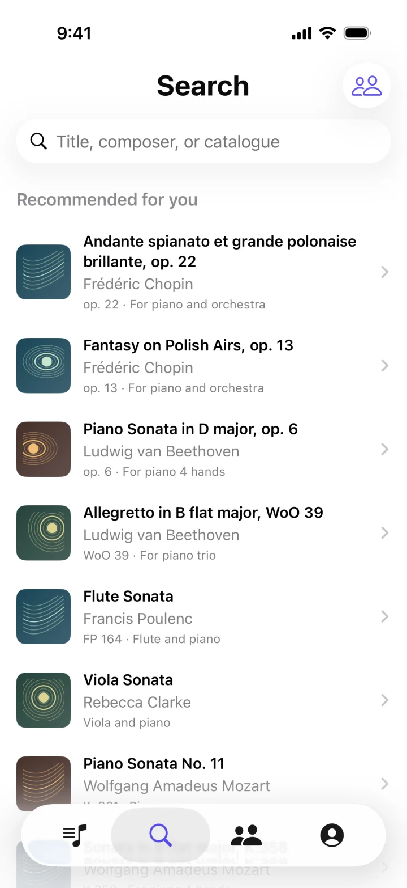

Sheet music, practice plans, and recordings come together in Android 1.0.1. The iPhone screens below preview the same practice tools coming in iOS 1.0.2.
Open a score from the catalogue where available, or import your own MusicXML or compressed MusicXML (.mxl) file. Turn your device sideways for more room, start playback from a selected bar, or loop a passage. For multi-part scores, you can show the part you’re practicing, toggle accompaniment, and adjust each part’s volume.
Give your practice a plan.
Choose practice days and set reminders with a weekly goal. For a recital or other deadline, a smart goal builds a bar-by-bar schedule around your practice time. Start from a later bar if you’ve already learned the opening, or build separate timelines for multiple parts.
Hear how your practice changes.
Time a session, use a metronome, or tune supported instruments. Record takes to listen back later and save the bars you covered. Your practice history and analytics show how your time adds up, and completed sessions earn XP.
Find more music to learn.
Search by title, composer, or catalogue number such as BWV 846. Repertoire suggests pieces based on what you play and save.

Practice with other musicians.
See who’s practicing in Discover, send encouragement, or invite a musician to practice alongside you. Share a recording when you publish a practice post.